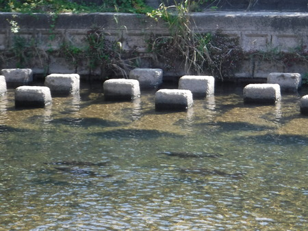
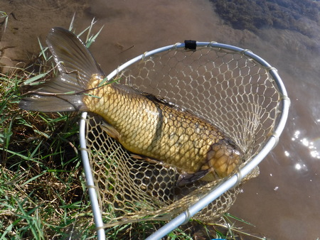

釣行日誌 故郷編
2021/11/03 都市河川のコイ釣り
本流のニゴイ狙いは魚影が薄く、あまりにも確率が低い。いささか心が折れたので、都市河川のコイ釣りに変更。
バイクを停めた橋詰めから静かに長いトロ場の尻まで歩み下り、ウロウロしている黒い影にキャスト。なぜか黒いウーリーバガーには反応が無かったが、オリーブ色に替えたら一発で目印が動いた。

すかさず合わせるが、ドラグがやや緩めでダッシュされ、主導権を握られる。はるか上流の葦の根元に潜られ、あっけなく８ポンドが切れた。
ラインを巻いてきてよく見ると、ちょうど結び目で切れていたので、しっかりフライが結べていなかったのかもしれない。
上流に行くに従って、ナチュラル系のフライに反応が悪くなり、ほぼ川底あたりを漂わせるようにニンフを結ぶと、それには目もくれず、ウキ代わりの白いヤーン・インジケーターに、グラマラスな唇でちょっかいを出してくる始末。しかし連中は、水面上の餌を咥えるのが非常に下手で、エッグフライを浮かせても、二、三度喰い損ねるともう見切ってしまう。
いよいよ橋のそばまで来て、ビーズヘッド付きの白いエッグフライを底まで沈め、鈎が口の中へ消えたのを見てから合わせる。ギューンっ！とダッシュが始まり、あとは体育会系の腕相撲か綱引きのごとき様相となる。見物していたおじさんがスマホを取り出して何やら操作しているので、ひょっとしてツーホーされたか？！ と危惧したが、サイレンの音は響かず、いつまでも粘る魚体を何とか40mほど下流の浅場に寄せた。
持ってはいたが、これまで使ったことの無いバネ秤で計量すると、4kg弱。体長は不明。

もう一尾を対岸で掛け、また下流へ引っ張っていってランディング。ひたすらの力比べで、文化の日が体育の日になってしまった。三時間ほどで二尾釣り上げ、おなかいっぱいになってしまい、ヨロヨロと釣り具を仕舞い、バイクに載せる。
と、散歩中のご夫婦が、橋の上からパンをコイに撒いてやっている。（笑）
『なるほど.....それで白いフライに反応が良かったのか。でも、良いタイミングでやめておいてよかった。』
夕食時には、マグカップを持つ腕が上がらないほどの筋肉痛になってしまった。情けない.....。
釣行日誌 故郷編 目次へ
サイトマップ
ホームへ
お問い合わせ